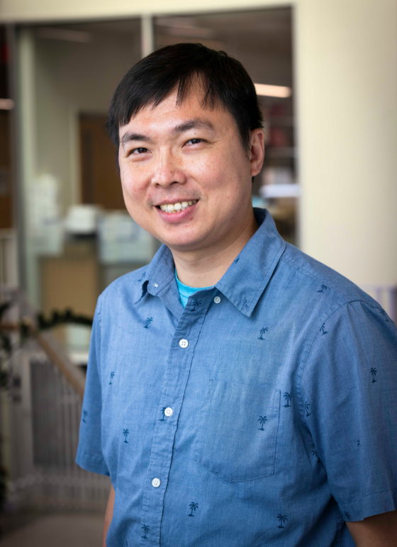
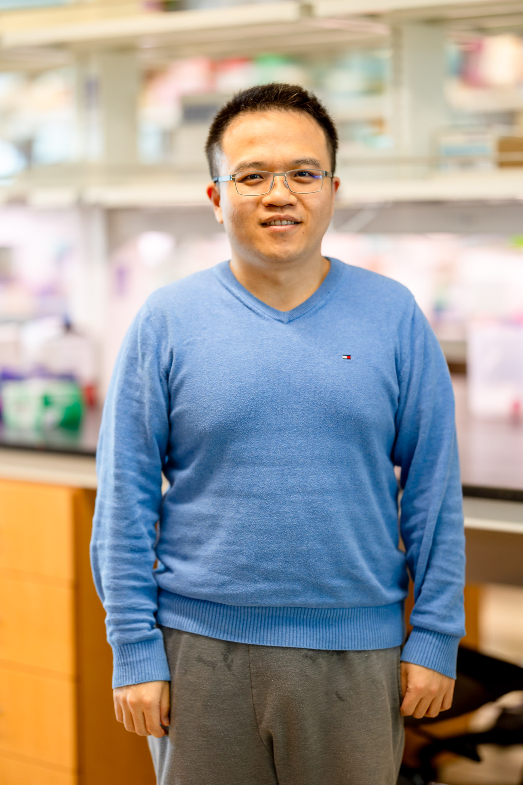
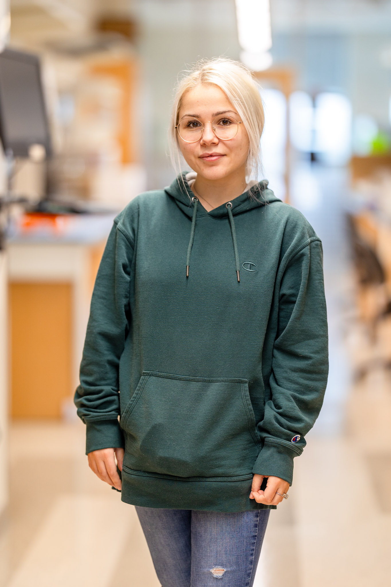
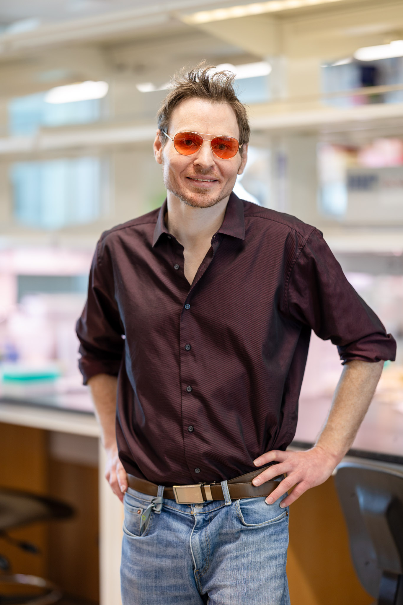
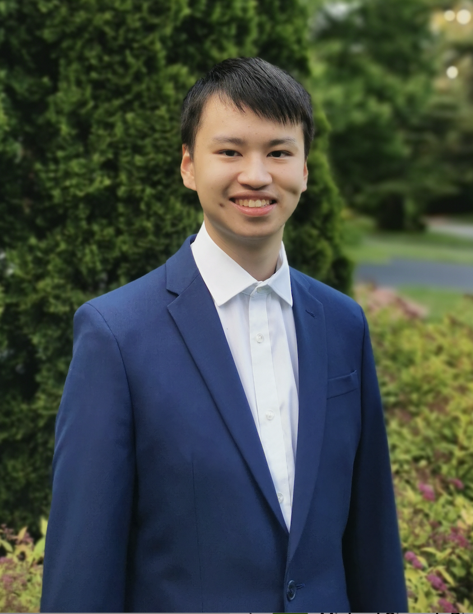

People
Principal Investigator

Sheng Chih (Peter) Jin
Peter is Assistant Professor of Genetics and Pediatrics at the Washington University School of Medicine. He is interested in understanding how genetic variation affects disease biology and using genetic and genomic analyses to infer the molecular mechanisms underlying neurodevelopmental and cardiovascular diseases. His full CV is available here.
NIH Grants
- R01NS131610: Molecular and Cellular Characterization of Congenital Hydrocephalus (Role: PI)(Active)
- R01NS111029: Human Genetics and Molecular Mechanisms of Congenital Hydrocephalus (Role: Co-PI) (Active)
- U19NS130607: INTERCEPT: Integrated Research Center for Human Pain Tissues (Role: Project 1 Co-PI and Data Core Co-PI) (Active)
- UM1DA058219: WashU-VAI Somatic Mosaicism across Human Tissues (SMaHT) Program Genome Characterization Center (Role: Co-Investigator) (Active)
- U24NS132103: WashU Somatic Mosaicism across Human Tissues (SMaHT) Program. Organizational Center (Role: Co-Investigator) (Active)
- R01AR067715: Genetic Risk Factors for Severe Scoliosis (Role: Co-Investigator) (Active)
- R01NS117609: Human Genetics and Molecular Mechanisms of Vein of
Galen Aneurysmal Malformation (Role: Co-Investigator) (Active)
- R01NS106298: Genomic Insights into the Neurobiology of Cerebral Palsy (Role: Co-Investigator) (Active)
- R01NS127108: Genomic analysis of the Multiplex, Autozygous Populations in Cerebral Palsy (MAP CP) cohort: a focused approach to a complex disease (Role: Co-Investigator) (Active)
Selected Honors and Awards
- NIH Early Career Reviewer Program, 2023
- Pediatric Cardiac Genomics Consortium and Cardiovascular Development Data Resource Center Challenge Prize, 2022
- Cerebral Palsy Alliance Research Foundation Project Grant, 2022-2027
- Hydrocephalus Association Innovator Award, 2021
- Children’s Discovery Institute Faculty Scholar, 2021-2026
- Children’s Discovery Institute Zebrafish Models for Pediatric Research Services Cooperative Micro-Grant Award, 2021
- Washington University Institute of Clinical and Translational Research Funding Program Award, 2020
- K99/R00 Pathway to Independence Award, NHLBI, NIH
- American Heart Association Postdoctoral Fellowship
- James Hudson Brown – Alexander B. Coxe Fellowship, Yale School of Medicine
- Howard Hughes Medical Institute Postdoctoral Fellowship, Howard Hughes Medical Institute at Yale School of Medicine
- Fellow, Lucille P. Markey Special Emphasis Pathway in Human Pathobiology, Markey Foundation, Washington University School of Medicine
Faculty, Postdoctoral Researchers and Staff Scientists

Yung-Chun (David) Wang, Instructor
David earned a B.S. in Agriculture Chemistry from the National Taiwan University. He did his Ph.D. with Dr. Shiyou Chen studying the mechanism underlying the regulation of JAK3 in abdominal aortic aneurysm at the University of Georgia. David has received a prestigious Center of Regenerative Medicine Postdoctoral Fellowship. He is focused on genetic analyses and functional genomics of congenital hydrocephalus and cerebral palsy projects.
Graduate Students

Nahyun Kong, Ph.D. Candidate and Mogam Science Scholar/Precision Medicine Pathway Fellow (Human & Statistical Genetics)
Nahyun is a 5th-year Ph.D. student at Washington University in St. Louis. She earned her B.S. in Biological Sciences from the Korea Advanced Institute of Science and Technology. Her research focuses on developing novel methodologies to investigate the roles of uniparental disomy, mitochondrial genome variants, and somatic variants in both disease and normal states.
Zitian Tang, Ph.D. Candidate and Precision Medicine Pathway Fellow (Biomedical Informatics & Data Science)
Zitian is a 4th-year PhD student at Washington University in St. Louis. She completed her BS in Biomedical Engineering and Computer Science at the Georgia Institute of Technology. She is developing computational strategies and tools to elucidate the impact of short tandem repeats and contribute to the somatic variation catalog for the Somatic Mosaicism Across Human Tissues consortium.
Jenna Ulibarri, Ph.D. Candidate and T32 CMB/IMSD Fellow (Molecular Genetics and Genomics)
Jenna is a 4th-year PhD student at Washington University in St. Louis. She completed her BS in Biology at the University of New Mexico-Albuquerque. She is focusing on the development of computational and functional genomic strategies within the context of studying Proteogenomics in peripheral neuropathy.
Emma Casey, Ph.D. Student and IMSD/NINDS Diversity Supplement/Precision Medicine Pathway Fellow (Molecular Genetics and Genomics)
Emma is a 3rd-year PhD student at Washington University in St. Louis. She earned her BS in Environmental Science from DePaul University, followed by a master’s degree in Public Health from Emory University. Her research interests lie in utilization of human genetics and functional genomics to understand how mitochondrial and nuclear genomes influence the pathomechanisms of peripheral neuropathy and congenital hydrocephalus.
Purva Patel, Ph.D. Student and Precision Medicine Pathway Fellow (Computational & Systems Biology)
Purva is a 3rd-year PhD student at Washington University in St. Louis. She earned her BS in Biology from University of Missouri-Columbia, followed by a master’s degree in Bioinformatics from University of Missouri-Kansas City. Her research interests lie in utilization of human genetics and functional genomics to uncover the genetic underpinnings of congenital hydrocephalus.
Zefan (Vivien) Li, Ph.D. Student and Precision Medicine Pathway Fellow (Molecular Cell Biology)
Vivien is a 3rd-year PhD student at Washington University in St. Louis. She earned her BS in Biological Science from Peking University. Her research interests lie in utilization of human genetics and multi-omics genomics to uncover the genetic underpinnings of idiopathic peripheral neuropathy.

Wendy Dong, MSTP Candidate and T32 GATP Fellow (Computational & Systems Biology)(Joint with Jeff Milbrandt)
Wendy is a 3rd-year MD/PhD student at Washington University in St. Louis. She completed her BS in Biomedical Engineering at the Duke University. She is co-mentored by Dr. Jeffery Milbrandt and Dr. Jin to elucidate comprehensive molecular/cellular phenotypes that underlie human pain transduction, transmission, and processing.
Staff

Elvisa Mehinovic, Bioinformaticist
Elle completed her M.S. in Biomedical Informatics & Data Science at Washington University. Her favorite hobbies include cuddling with her cat and drawing.

Jason Bedwinek, Research Lab Supervisor
Jason earned his M.S. in biotechnologies at University of Missouri St. Louis. His main area of interest is nucleic acid chemistry, especially as it relates to sequencing technologies. His main focus is on using functional genomic assays to associate underlying genetic variants with neurological pathologies.
Rotation Students and Interns

Brian Yu, Undergraduate Student (U of Chicago Computer Science)
Lab Pets
Ziggy

Alumni
Graduate Students:
Shujuan Zhao - Graduate Student (Molecular Genetics and Genomics), 2020/09 - 2025/08
Rotation Students:
Wilber Palma - Rotation Student (Molecular Genetics and Genomics), 2025/01 - 2025/04, currently graduate student in Mike Meers’s lab.
Sam Greenberg - Rotation Student (Molecular Genetics and Genomics), 2025/01 - 2025/03, currently graduate student in Priyanka Verma’s lab.
Yu Liu - Rotation Student (Molecular Cell Biology), 2024/10 - 2025/02, currently graduate student in Kelly Bolton’s lab.
Tingkuan Chu - Rotation Student (Molecular Genetics and Genomics), 2024/09 - 2024/11, currently graduate student in Jeffrey Milbrandt’s lab.
Qichen Fu - Rotation Student (Molecular Genetics and Genomics), 2023/11 - 2024/01, currently graduate student in Ting Wang’s lab.
Justin Chen - Rotation Student (Computational and Systems Biology), 2023/04 - 2023/07, currently graduate student in Ting Wang’s lab.
Yu-Liang Yeh - Rotation Student (Biomedical Informatics & Data Science), 2023/01 - 2023/04, currently graduate student in Michael Meers’s lab.
Ai Zhang - Rotation Student (Human & Statistical Genetics), 2022/09 - 2022/11; currently graduate student in Gautam Dantas’s lab.
Vincent Gillespie - Rotation Student (Molecular Genetics and Genomics), 2022/07 - 2022/09; currently graduate student in Gautam Dantas’s lab.
Yuxiao Xu - Rotation Student (WashU MSTP), 2022/05 - 2022/06; currently graduate student in Mayssa Mokalled’s lab.
Lei Lu - Rotation Student (Computer Science & Engineering), 2022/01 - 2022/02; currently graduate student at Northeastern University.
Mariam Khanfar - Rotation Student (Human & Statistical Genetics), 2021/09 - 2021/12; currently graduate student in Malachi Griffith’s lab.
Kuangying Yang - Rotation Student (Human & Statistical Genetics), 2021/09 - 2021/12; currently graduate student in Angela Hirbe’s lab.
Julie Choi - Rotation Student (Human & Statistical Genetics), 2021/10 - 2021/12; currently graduate student in Jeffrey Milbrandt’s lab.
Prashant Kumar Kuntala - Rotation Student (Computational and Systems Biology), 2021/09 - 2021/11; currently graduate student in Ting Wang’s lab.
Changfeng Chen - Rotation Student (Molecular Cell Biology), 2021/02 - 2021/04; currently graduate student in Benjamin Humphreys’s lab.
Jian Ryou - Rotation Student (Human & Statistical Genetics), 2020/11 - 2021/02; currently graduate student in Gautam Dantas’s lab.
Undergraduate Students:
Andrew Ruttenberg - Undergraduate Student (WashU PreMed), 2022/09 - 2025/06; currently a PhD student at U of Toronto.
Tugce Iyiyol - Undergraduate Student (WashU PreMed), 2022/08 - 2024/05
Owen Limbrick - Undergraduate Student (WashU PreMed), 2024/09 - 2025/05
Summer Interns:
Aria Ma - McDonnell Genome Institute OGR Summer Student, 2024/06 - 2024/08; currently a senior at Tufts University.
Athziri Marcial Rodriguez - McDonnell Genome Institute OGR Summer Student, 2022/06 - 2022/08; currently a Physician-Scientist Kornfeld Post-Bac Scholar at WashU.
Cabria Shelton - McDonnell Genome Institute OGR Summer Student, 2022/06 - 2022/08; currently a master’s student at Wake Forest U.
Max Wrubel - McDonnell Genome Institute OGR Post-Baccalaureate Extensive Study Student, 2021/11 - 2022/07; currrently bioinformatician in Alison Goate’s lab at Mount Sinai.
Kareena Joshipura - Mount Holyoke College’s Lynk Fellow, 2021/04 - 2021/09; currently a software engineer at Capgemini.
Staff:
Po-Ying Fu - Bioinformaticist, 2020/06 - 2023/04, currently data engineer at the Cathay United Bank.
Devin Qiu - Research Assistant, 2022/07 - 2022/12; currently a PhD students at Van Andel Institute.
Master’s Students:
Xiaobing (Dean) Yu - Master’s student (Computer Science & Engineering), 2021/03 - 2021/11; currently graduate student in Aristeidis Sotiras’s lab.
Sam Peters - Master’s student (Bioinformatics and Computational Biology at SLU), 2020/05 - 2021/04; currently research specialist at the McDonnell Genome Institute.
Spencer King - Master’s student (Computer Science & Engineering), 2020/05 - 2021/05; currently data scientist at Geneoscopy.